reviewAlluvial() shows how studies flow across two or
more categorical columns: each study traces a path through the strata,
and the ribbons reveal which category combinations co-occur. It is the
tool for spotting patterns like “which designs measure which outcomes.”
This article walks through every argument of
reviewAlluvial(data, cols, sep = "\r\n", study_id = StudyID, colors = PALETTE,
base_size = 12, na.rm = TRUE, na_label = "Not reported",
labels = c("none", "prop", "count", "both"), flow_labels = FALSE,
flow_alpha = 0.25, stratum_width = 0.5, axis_labels = NULL)It requires the ggalluvial package.
Default
Pass the data frame and a character vector of column names. Each axis is one column; the boxes (strata) are its categories, and the ribbons connecting them are the studies.
reviewAlluvial(studies, c("Design", "Outcome"))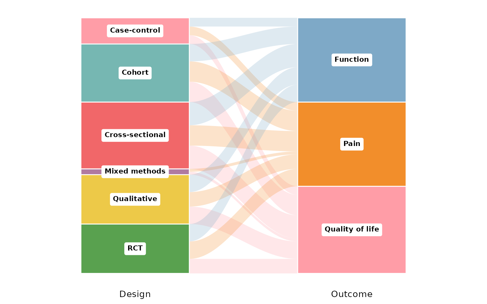
cols: the columns to trace
cols is a character vector of two or more column
names, one axis per name, drawn left to right. A two-column
diagram links designs to outcomes:
reviewAlluvial(studies, c("Design", "Outcome"))
Add a third column and every study now traces a path across three
axes. Multi-value columns (Outcome, AgeGroup)
are split first, so a study with several values contributes a flow to
each:
reviewAlluvial(studies, c("Design", "Outcome", "AgeGroup"))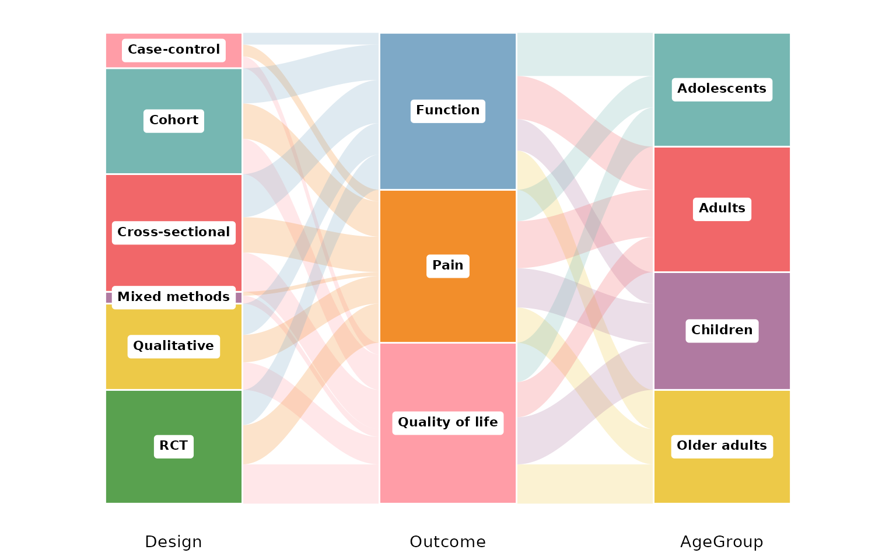
sep: multi-value separator
Some cells hold several values. In studies,
Outcome and AgeGroup use newline separators
("\r\n", the default), so each value spawns its own flow.
If your data uses a different delimiter, set sep. Here we
rebuild a semicolon-separated column to demonstrate:
studies_semi <- studies
studies_semi$Outcome <- gsub("\r\n", "; ", studies_semi$Outcome)
reviewAlluvial(studies_semi, c("Design", "Outcome"), sep = "; ")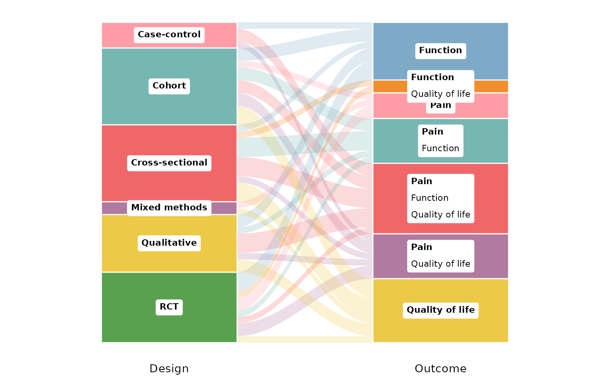
study_id: the identifier column
study_id names the column that identifies one study
(default StudyID). It defines what a single flow is: rows
sharing an ID are one study, so multi-value cells fan out from the same
origin. Any unique identifier works — here we use
Author:
reviewAlluvial(studies, c("Design", "Outcome"), study_id = Author)
colors: the stratum palette
Strata are filled from a palette vector (default
PALETTE). Print it to see the default colors:
PALETTE
#> [1] "#ff9da7" "#76b7b2" "#f16769" "#b07aa1" "#edc948" "#59a14f" "#7ea9c7"
#> [8] "#F28E2B"Pass your own vector to recolor the strata (recycled if shorter than the number of categories):
reviewAlluvial(studies, c("Design", "Outcome"),
colors = c("#4E79A7", "#F28E2B", "#E15759", "#76B7B2",
"#59A14F", "#EDC948"))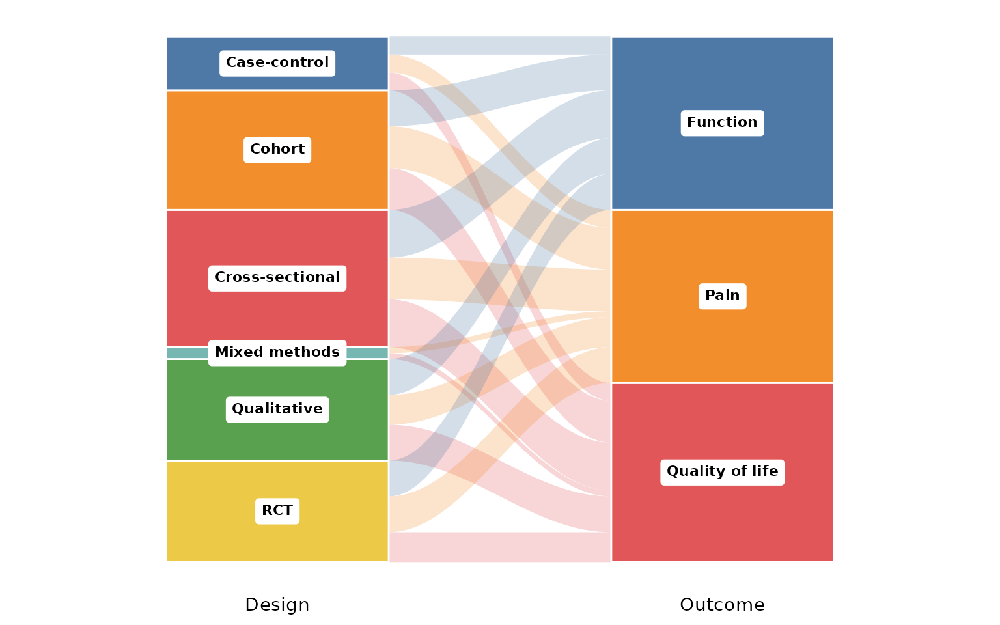
base_size: overall text and element scaling
A single knob scales all text and spacing proportionally. Smaller, for multi-panel figures:
reviewAlluvial(studies, c("Design", "Outcome"), base_size = 9)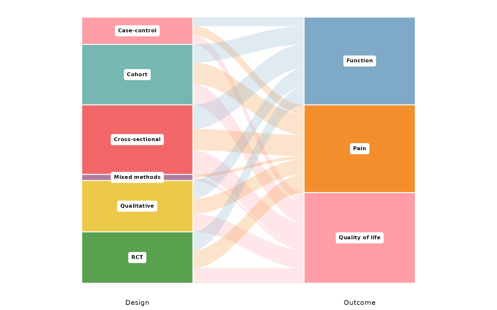
Larger, for slides or posters:
reviewAlluvial(studies, c("Design", "Outcome"), base_size = 18)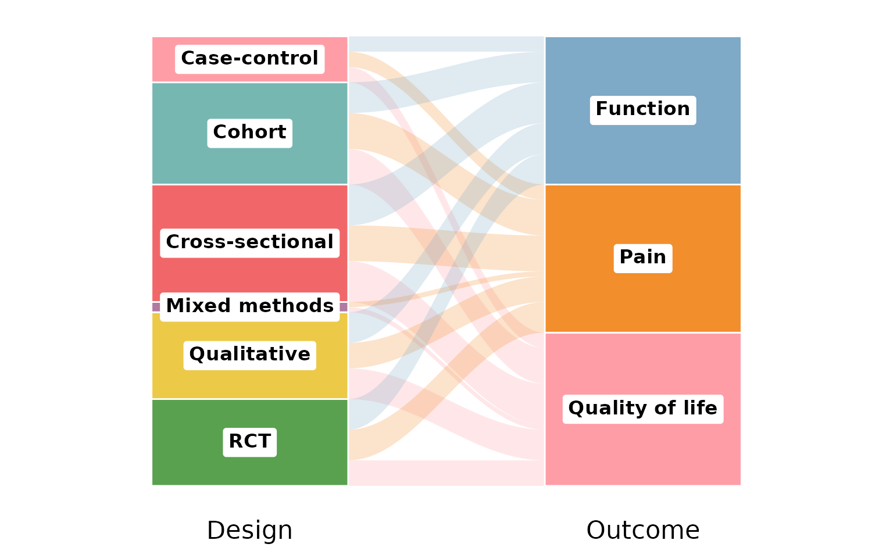
Missing data: na.rm and na_label
By default na.rm = TRUE drops studies with a missing (or
empty) value in any of the plotted columns. We use
RiskOfBias and FundingSource — the latter has
missing values:
reviewAlluvial(studies, c("RiskOfBias", "FundingSource"))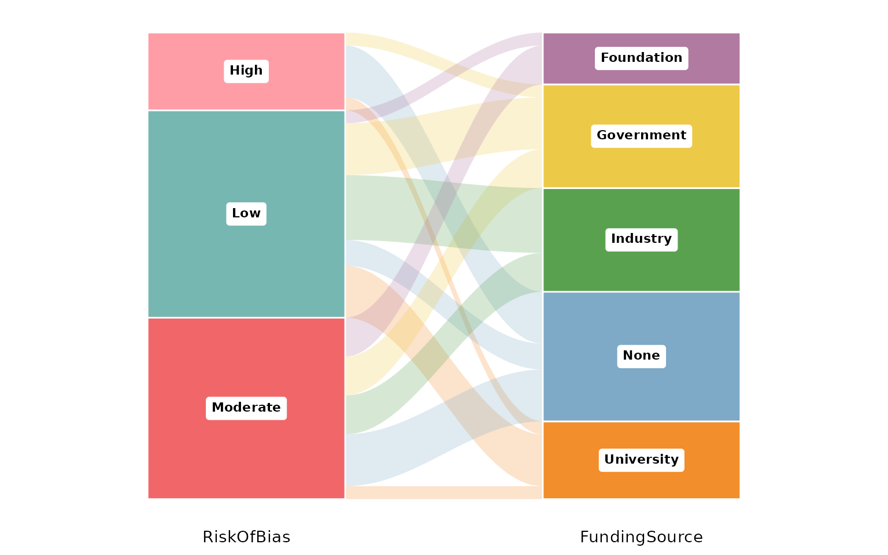
Set na.rm = FALSE to keep the missing values as their
own stratum; na_label names it:
reviewAlluvial(studies, c("RiskOfBias", "FundingSource"),
na.rm = FALSE, na_label = "Not reported")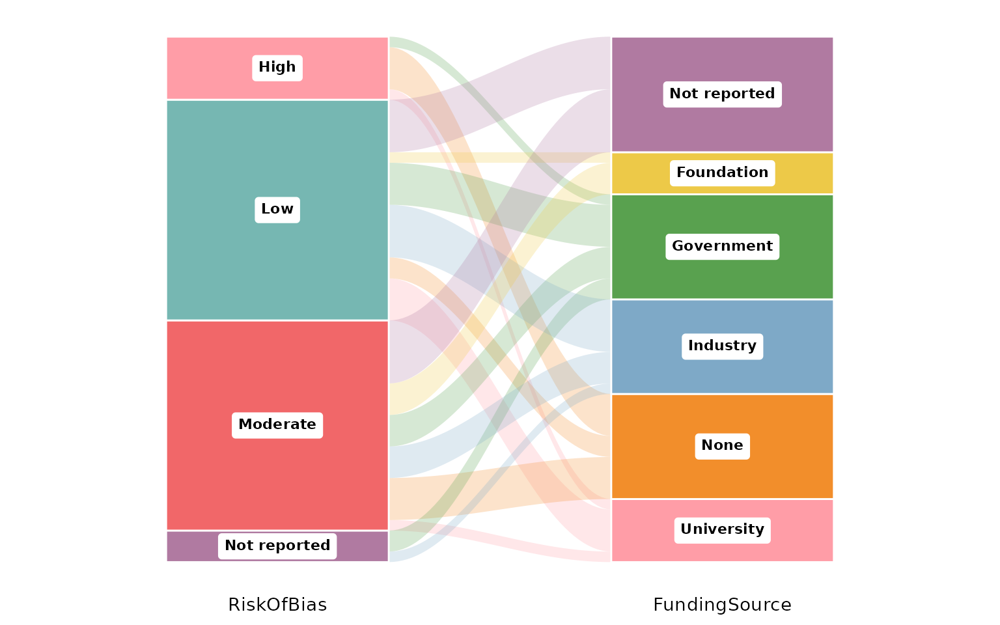
labels: what to print on each stratum
labels controls the annotation inside each stratum box.
The default "none" leaves them bare:
reviewAlluvial(studies, c("Design", "Outcome"), labels = "none")
"count" adds the number of studies in each stratum:
reviewAlluvial(studies, c("Design", "Outcome"), labels = "count")"prop" shows the proportion instead:
reviewAlluvial(studies, c("Design", "Outcome"), labels = "prop")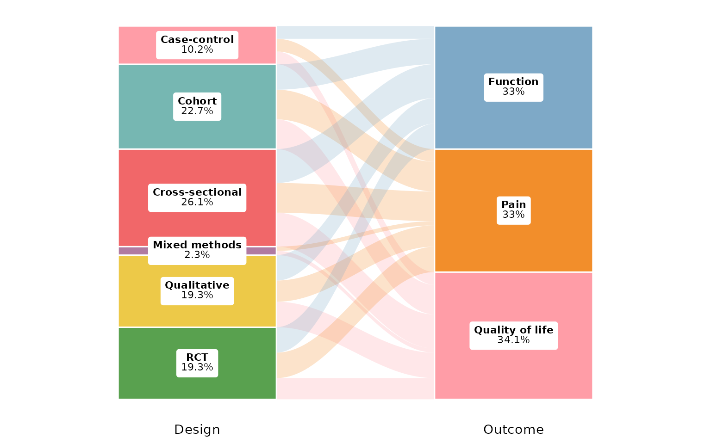
"both" prints count and proportion together:
reviewAlluvial(studies, c("Design", "Outcome"), labels = "both")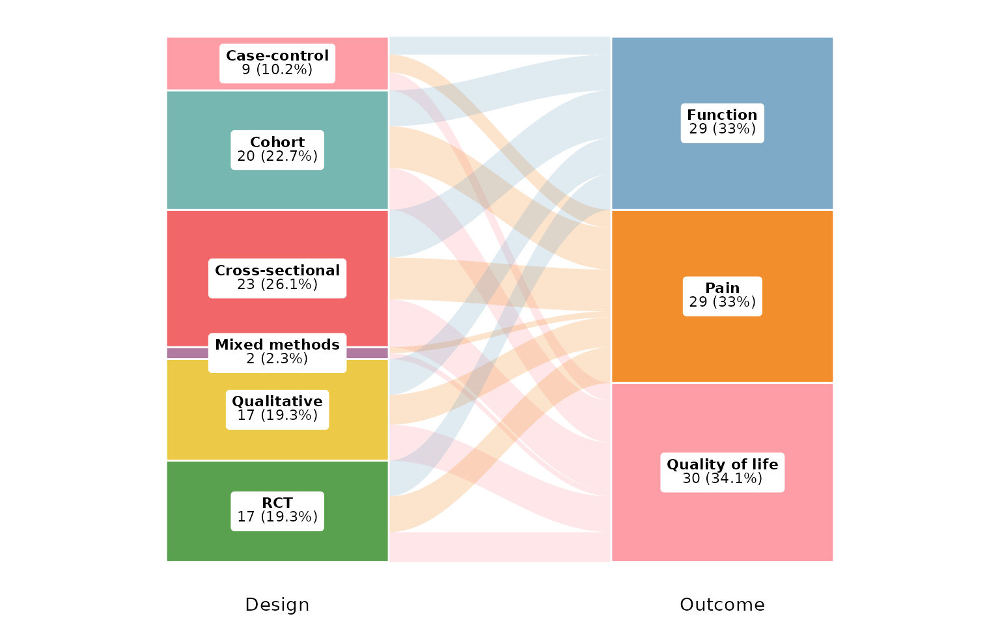
flow_labels: counts on the ribbons
Set flow_labels = TRUE to print the number of studies on
each ribbon between strata, making individual co-occurrences
legible:
reviewAlluvial(studies, c("Design", "Outcome"), flow_labels = TRUE)
flow_alpha: ribbon transparency
flow_alpha sets the opacity of the ribbons, from 0
(invisible) to 1 (opaque). Low values keep dense diagrams readable by
letting overlaps show through:
reviewAlluvial(studies, c("Design", "Outcome"), flow_alpha = 0.15)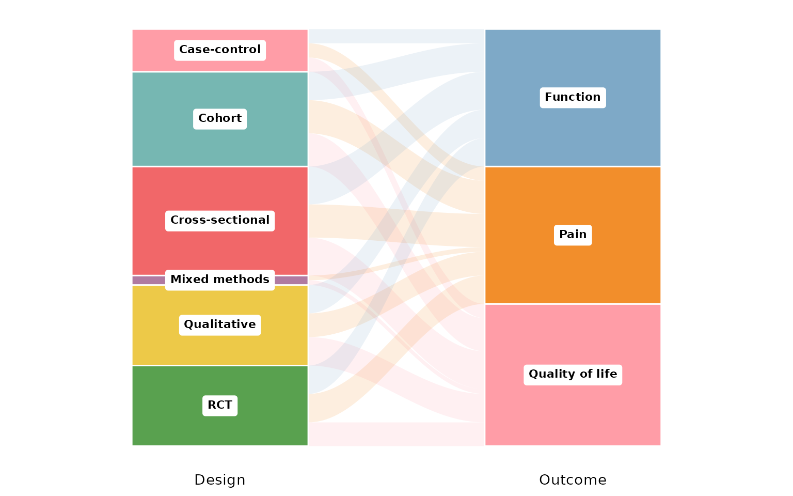
A high value makes the flows bold and solid:
reviewAlluvial(studies, c("Design", "Outcome"), flow_alpha = 0.9)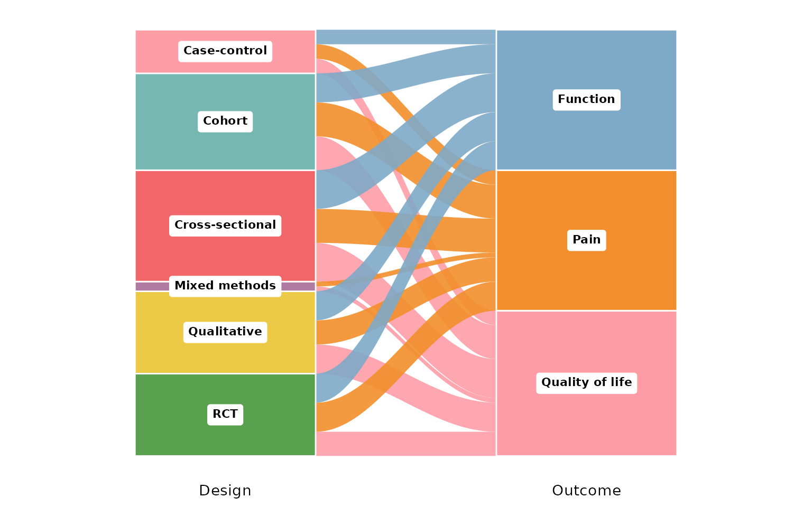
stratum_width: width of the stratum boxes
stratum_width runs from 0 to 1 (fraction of the axis
band). Narrow boxes give the ribbons more room:
reviewAlluvial(studies, c("Design", "Outcome"), stratum_width = 0.2)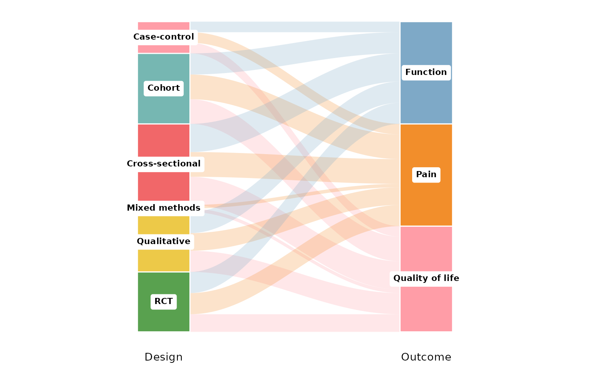
Wide boxes emphasise the strata over the flows:
reviewAlluvial(studies, c("Design", "Outcome"), stratum_width = 0.8)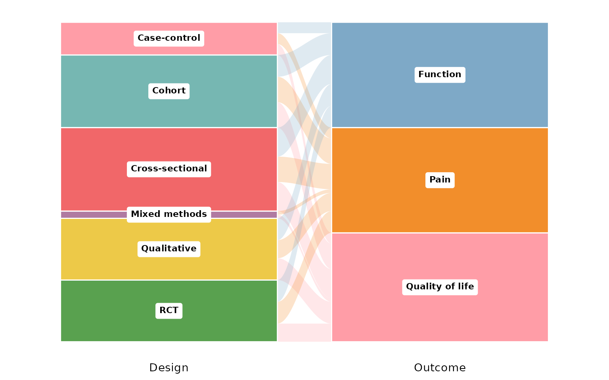
axis_labels: custom axis titles
By default each axis is titled with its column name. Pass
axis_labels, a character vector matching cols,
to rename them:
reviewAlluvial(studies, c("Design", "Outcome", "AgeGroup"),
axis_labels = c("Study design", "Outcome", "Age group"))Composing with ggplot2
Every review*() function returns a plain ggplot, so you
can keep adding layers, scales, and labels with +:
reviewAlluvial(studies, c("Design", "Outcome")) +
labs(title = "Designs and outcomes", subtitle = "n = 50 studies",
caption = "Source: example dataset") +
theme(plot.title.position = "plot")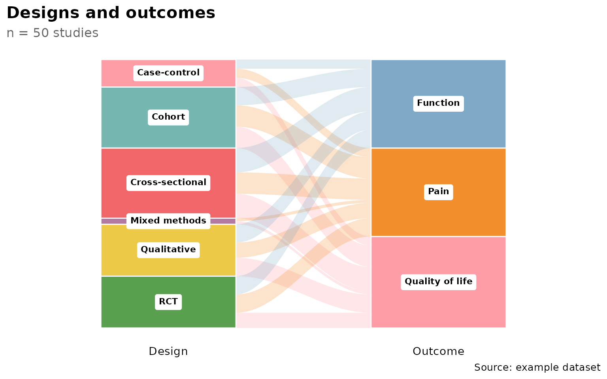